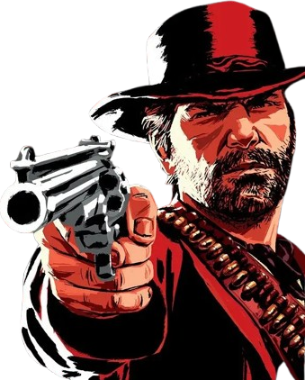
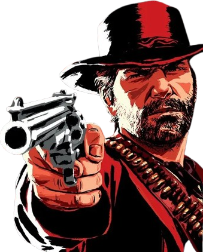
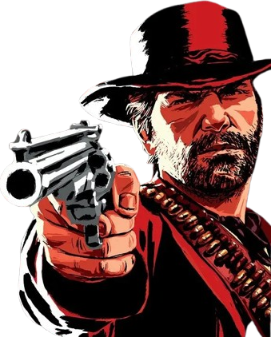
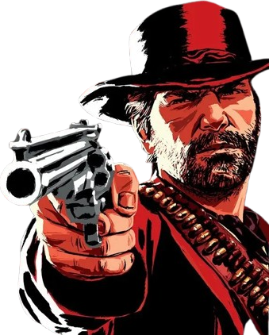

Red Dead Redemption 2 é um jogo eletrônico de ação-aventura desenvolvido e publicado pela Rockstar Games. É o terceiro título da série Red Dead e uma prequela de Red Dead Redemption, tendo sido lançado em outubro de 2018 para PlayStation 4 e Xbox One e em novembro de 2019 para Microsoft Windows e Google Stadia.
A AMÉRICA NO ALVORECER DA IDADE MODERNA. Estados Unidos, 1899. Após um assalto que deu errado na cidade de Blackwater, Arthur Morgan e a gangue Van der Linde são forçados a fugir. Com agentes federais e caçadores de recompensas se reunindo em sua caçada, a gangue deve assaltar, roubar e lutar para sobreviver.
Arthur Morgan é o protagonista de Red Dead Redemption 2, um jogo ambientado no Velho Oeste americano em 1899. Ele é um membro da gangue Van der Linde, um fora da lei que luta para sobreviver em um mundo em declínio, confrontando as forças do governo e outras gangues. Arthur é conhecido por sua lealdade, mas também por sua ambiguidade moral, alternando entre atos de violência e momentos de bondade.
À medida que o jogo avança, a gangue Van der Linde enfrenta desafios crescentes, incluindo a pressão do governo, a perda de membros e a influência corruptora de Micah Bell. Arthur é diagnosticado com tuberculose, o que o leva a questionar seu estilo de vida e buscar redenção. Ele se torna mais crítico em relação às ações de Dutch e começa a se preocupar com o futuro da gangue e das pessoas que ama. Arthur confronta seus próprios demônios, lutando para se tornar uma pessoa melhor e proteger aqueles que são importantes para ele.